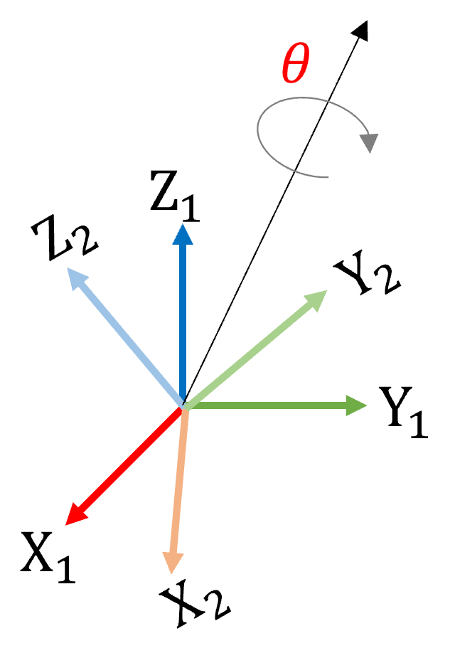
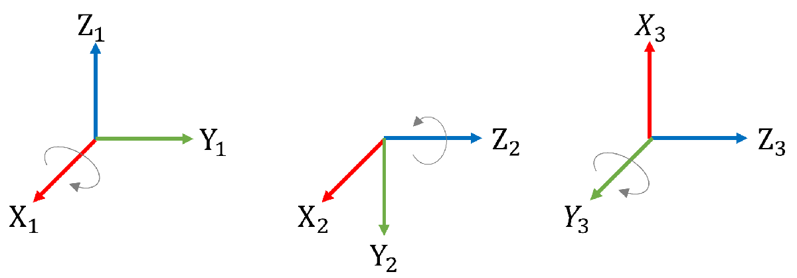
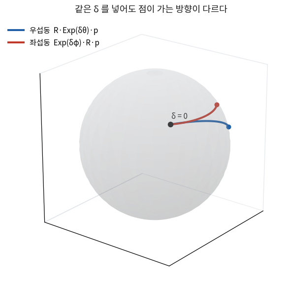

지난 시간에는 \(R\)을 주어진 것으로 놓고 곱하기만 했다.
오늘부터는 \(R\)이 우리가 추정할 변수가 된다.
변수가 되는 순간 미분이 필요하고, 거기서 문제가 생긴다 —
회전행렬은 더할 수 없기 때문이다. \(R + \delta R\)은 회전행렬이 아니다.
오늘 배우는 것은 그 문제를 푸는 표준적인 방법이다.
그리고 이것이 이 강의를 3D Vision에서 SLAM으로 넘기는 지점이다.
9회의 번들조정, 11회의 오차상태 필터, 12회의 사전적분이 전부 오늘 식을 다시 쓴다.
한 장 요약 — 표현 네 가지 학기 내내 본다
마지막 열이 이 표의 결론이다. 저장과 최적화에 다른 표현을 쓴다.
표현
수
약점
어디에 쓰나
회전행렬 \(R \in \mathbf{SO}(3)\)
9
제약이 6개다(\(R^\top R = I\)). 최적화 변수로 못 쓴다
계산, 저장
오일러각
3
짐벌락. 게다가 축 순서가 12가지
사람에게 보여 줄 때만
축-각 \(\boldsymbol\phi \in \mathfrak{so}(3)\)
3
최소 표현이지만 \(\theta = 0\)과 \(\theta = \pi\)에서 조심해야 한다
최적화 변수
쿼터니언 \(q\)
4
이중 덮개 — \(q\)와 \(-q\)가 같은 회전이다
적분, 보간, 파일 저장
해석:저장은 쿼터니언(또는 행렬)으로, 최적화는 축-각으로 한다.
그 둘 사이를 오가는 다리가 오늘 배울 \(\mathrm{Exp}\)와 \(\mathrm{Log}\)다.
「어느 표현이 제일 좋은가」는 좋은 질문이 아니다. 일마다 좋은 표현이 다르고, 변환식을 알면 된다.
① 회전은 왜 3 자유도인가
아무리 복잡한 회전도 축 하나를 정하고 그 축으로 한 번 돌리는 것으로 만들 수 있다.
이것이 오일러 회전 정리이고, 자유도를 세는 근거이기도 하다.

축(방향 2개) + 각도(1개) = 3.
축 벡터는 숫자 셋으로 쓰지만 크기를 1로 고정하므로 자유도는 둘이다.
회전행렬은 이 3 자유도를 숫자 아홉 개로 담는다. 남는 여섯 개는 제약으로 묶여 있다.
최적화에서 이것이 왜 문제인지는 ⑤절에서 분명해진다 —
아홉 개를 자유롭게 움직이면 회전행렬 밖으로 나가 버린다.
② 오일러각과 짐벌락 — 왜 사람에게 보여 줄 때만 쓰나
세 축을 차례로 돌려 회전을 만드는 방식이다. 사람이 읽기에 가장 편하다 —
「롤 5°, 피치 −12°, 요 90°」는 머릿속에 그림이 그려진다.
문제는 가운데 축이 ±90°가 되는 순간이다.

가운데 회전이 90°가 되면 첫째 축과 셋째 축이 같은 방향으로 겹친다.
돌릴 수 있는 방향이 셋에서 둘로 줄어든다. 이것이 짐벌락이다.
해석: 짐벌락에서 나쁜 것은 「회전을 표현하지 못한다」가 아니다.
표현은 된다. 나쁜 것은 그 근처에서 각도 값이 폭주한다는 것이다.
자세가 조금 변했는데 요 값이 0에서 180으로 튄다. 그 값을 미분하거나 평균 내면 결과가 무너진다.
추정기 안에 오일러각을 넣지 않는 이유가 이것이다.
⚠️ 순서가 12가지다
ZYX인지 ZYZ인지, 고정축(extrinsic)인지 따라가는 축(intrinsic)인지에 따라 같은 세 숫자가 다른 회전이 된다.
논문이나 라이브러리에서 오일러각을 볼 때는 순서를 먼저 확인한다.
이 강의에서는 화면에 찍어 볼 때만 쓰고, 그때도 순서를 주석에 적는다.
③ 축-각과 로드리게스 — \(\mathfrak{so}(3) \leftrightarrow \mathbf{SO}(3)\)
회전축 방향 \(\mathbf{a}\)(길이 1)와 각도 \(\theta\)를 하나의 벡터로 합친 것이 축-각 표현이다.
EuRoC T_BC 의 회전: 축 (−0.0110, 0.0150, 0.9998), 각 89.16°
해석: 숫자 아홉 개짜리 행렬이 「z축으로 89.16°」 한 줄이 됐다.
이것이 축-각 표현의 값어치다 — 사람이 읽을 수 있고, 틀렸는지 바로 보인다.
행렬을 전치해서 읽었다면 각도는 그대로인데 축의 부호가 뒤집힌다.
자세를 눈으로 검사할 때 축-각으로 바꿔 보는 습관이 학기 내내 도움이 된다.
④ 쿼터니언과 이중 덮개
숫자 넷에 제약 하나(\(\lVert q \rVert = 1\))다. 곱셈이 싸고 수치적으로 안정해서
적분과 보간, 파일 저장에 쓴다. 회전행렬로 바꾸는 식은 라이브러리가 해 준다.
알아 둘 것은 하나다. \(q\)와 \(-q\)가 같은 회전이다.
구면 위 두 점이 같은 회전을 가리키므로 「이중 덮개」라고 부른다.
⚠️ 부호를 통일하지 않으면 평균과 보간이 깨진다
거의 같은 두 자세인데 하나는 \(q\), 다른 하나는 \(-q\)로 저장돼 있으면
단순 평균이 엉뚱한 회전이 된다. 두 점을 잇는 보간도 먼 쪽으로 돈다.
보통 w 성분이 음수면 부호를 뒤집어 통일한다.
루프 클로징(14회)에서 자세를 비교할 때 이 자리가 실제로 나온다.
해석: 「쿼터니언은 짐벌락이 없으니 최적화도 쿼터니언으로 하면 된다」는 흔한 오해다.
숫자 넷에 제약 하나이므로 여전히 자유롭게 움직일 수 없다.
최적화는 제약 없는 세 숫자가 필요하고, 그것이 축-각이다.
쿼터니언으로 저장해 두고 갱신할 때만 축-각으로 옮겨 가는 것이 표준 방식이다.
⑤ 섭동 — 회전은 더할 수 없다 사람이 한다
보통의 최적화는 변수를 조금 흔들어 보고 결과가 얼마나 변하는지를 보면서 내려간다.
\(x \leftarrow x + \delta x\)다. 회전에는 이게 안 된다.
\(R + \delta R\)은 \(R^\top R = I\)를 만족하지 않으므로 회전행렬이 아니다.
그래서 더하는 대신 곱한다. 그런데 곱하는 자리가 두 곳이다.
$$
\text{우섭동:}\quad R \leftarrow R\,\mathrm{Exp}(\delta\boldsymbol\theta)
\qquad\qquad
\text{좌섭동:}\quad R \leftarrow \mathrm{Exp}(\delta\boldsymbol\varphi)\,R
$$
어느 쪽
\(\delta\)는 어느 좌표계에서 본 미소 회전인가
이 강의에서
우섭동
몸체 좌표계에서 본 것. \(R\)이 먼저 있고 그 뒤에 조금 더 돈다
이것으로 통일한다
좌섭동
월드 좌표계에서 본 것. 먼저 조금 돌고 \(R\)이 적용된다
쓰지 않는다
왜 우섭동인가. IMU 측정이 몸체 좌표계에서 나오기 때문이다(10회).
자이로가 재는 각속도도, 가속도계가 재는 비력도 전부 몸체 좌표계 값이다.
우섭동을 쓰면 야코비안이 측정과 같은 좌표계에 놓인다.
오른쪽은 대각이 0인 반대칭 행렬이고 왼쪽은 아니다. 아예 다른 행렬이다.
수치 미분과 대조하면 이렇게 갈린다.
우섭동 식(맞는 것) 상대오차 5.001e-07 ← 통과 기준 1e-6
좌섭동 식(틀린 것) 상대오차 8.886e-01 ← 거의 90 % 가 틀렸다

같은 \(\delta\) 값을 넣어도 점이 가는 방향이 다르다.
\(\delta = 0\)에서는 둘이 같은 점이므로 값만 보면 구별되지 않는다.
구별되는 것은 미분, 즉 갈라지는 방향이다.
⛔ 두 방향을 섞으면 무슨 일이 생기나
에러가 나지 않는다. 최적화는 돌아간다.
다만 야코비안이 실제 기울기와 다른 방향을 가리키므로
수렴이 느려지거나, 엉뚱한 곳에서 멈추거나, 어떤 데이터에서만 발산한다.
「반복 횟수를 늘리면 되겠지」로 덮이는 일이 흔하고, 그러면 원인은 학기 끝까지 남는다.
⑥ 수치 야코비안 대조 — 오늘 배우면 학기 내내 쓴다 맡기되 검사한다
⑤절의 두 식 중 어느 것이 맞는지 손으로 다시 유도해서 확인하지 않는다.
그건 틀린 유도를 두 번 하게 될 뿐이다. 기계에게 물어본다.
방법은 간단하다. 변수를 아주 조금 흔들어 결과가 얼마나 변하는지 직접 재고,
손으로 쓴 식과 비교한다. 흔드는 방식만 다양체 위에서 해 주면 된다 —
더하는 대신 \(\mathrm{Exp}\)로 곱한다.
// 다양체 위의 유한차분. ⊞ 가 회전이면 R·Exp(ε·e_i) 다.
for (int i = 0; i < N; ++i) {
Eigen::VectorXd e = Eigen::VectorXd::Zero(N);
e(i) = eps; // eps = 1e-6
J_num.col(i) = ( f(boxplus(x, e)) - f(x) ) / eps;
}
// 판정: (J_num - J_analytic).norm() / J_num.norm() < 1e-6
🆕 이 코드에서 처음 나오는 것
boxplus(x, e) — 흔히 \(x \boxplus e\)로 쓴다
「다양체 위의 더하기」. 변수가 보통 벡터면 그냥 \(x + e\)이고,
회전이면 \(R\,\mathrm{Exp}(e)\)다.
여기서는 유한차분을 회전 위에서 하기 위해 썼다.
상태에 위치와 회전이 섞여 있으면 성분마다 다르게 처리한다.
eps = 1e-6
너무 크면 근사 오차가, 너무 작으면 반올림 오차가 커진다.
double에서는 1e-6 근처가 무난하다.
기준을 통과하지 못하면 eps를 열 배씩 바꿔 보는 것이 첫 확인이다 —
eps에 따라 결과가 크게 달라지면 수치 쪽 문제이고, 어느 eps에서도 같은 값으로 틀리면 식이 틀린 것이다.
해석: 이 시험이 이 강의에서 가장 많은 버그를 잡아낸다.
야코비안 부호 하나가 틀려도 에러는 안 난다.
결과가 조금 나쁠 뿐이고, 그 「조금 나쁨」은 잡음이나 데이터 탓으로 오해되기 딱 좋다.
검증 사다리 2단이 바로 이것이고, 오늘이 그 2단을 처음 밟는 날이다.
⑦ 우야코비안 — 오늘 해 두면 12회가 반으로 준다
\(\mathrm{Exp}\)에 미소 회전을 곱한 뒤 다시 \(\mathrm{Log}\)를 취하면 무엇이 되나.
「그냥 더해지겠지」가 답이면 좋겠지만 아니다. 보정 행렬이 하나 붙는다.
근사가 얼마나 좋은지 재 보면 이렇다. \(\boldsymbol\phi = (0.3, -0.5, 0.9)\)에 크기가 다른 \(\delta\)를 넣었다.
\(\lVert\delta\boldsymbol\varphi\rVert\)
1차 근사 오차
앞 줄 대비
0.1285
9.014e-04
—
0.0128
8.949e-06
100분의 1
0.0013
8.943e-08
100분의 1
해석: \(\delta\)를 10분의 1로 줄이면 오차가 100분의 1이 된다.
2차 수렴이고, 이것이 「1차 근사」라는 말이 실제로 뜻하는 바다.
이 표는 그 자체로 시험이기도 하다 — 비율이 100이 아니라 10으로 나오면 \(J_r\) 식이 틀린 것이다.
상수 계수 하나만 틀려도 여기서 걸린다.
이 두 줄은 12회 IMU 사전적분에서 그대로 다시 나온다.
바이어스가 조금 바뀌었을 때 적분값을 다시 계산하지 않고 보정하는 자리에서 필요하다.
오늘 해 두면 그때는 「아, 그 식」으로 넘어간다.
🤖 의뢰서 — 회전 유틸과 그 시험 맡기되 검사한다
회전 유틸은 짧다. 그런데 부호 하나가 틀려도 티가 안 나는 대표적인 코드다.
그래서 의뢰서의 [검증] 칸을 오늘 배운 통과 기준으로 채운다.
[규약] 첨부한 conventions.md를 따라 줘.
섭동은 우섭동으로 통일한다 — R ← R * Exp(dtheta). 좌섭동은 쓰지 않는다.
[인터페이스]Sophus::SO3d를 쓰고, 아래 두 함수를 만들어 줘.
① 점 하나를 회전시킬 때의 우섭동 야코비안Eigen::Matrix3d dRp_dtheta(const SO3d& R, const Vector3d& p)
② 임의의 함수에 대한 다양체 유한차분numericJacobian(f, R, eps)
[참조] Barfoot State Estimation for Robotics의 표기를 따라 줘.
우야코비안 Jr도 같이 만들어 줘.
[검증] 아래 시험을 같이 써 줘. 기준을 넘으면 실패로 출력한다.
① Log(Exp(phi)) == phi — 오차 < 1e-12, 무작위 φ 1000개로
② RᵀR = I, det R = 1 — < 1e-12
③ ①의 해석 야코비안과 ②의 수치 야코비안 — 상대오차 < 1e-6
④ Log(Exp(phi)*Exp(d)) ≈ phi + Jr(phi).inverse()*d가
‖d‖를 10분의 1로 줄일 때 오차가 100분의 1이 되는가 실패하면 어느 성분이 얼마나 벌어졌는지 함께 찍어 줘.
[함정] θ가 0에 가까울 때 sinθ/θ를 그냥 나누면 0으로 나눈다.
테일러 전개로 갈라 줘. θ가 π에 가까울 때도 Log가 불안정하다.
[남긴다] 규약에 없어서 임의로 정한 것을 코드 맨 위에 목록으로 적어 줘.
받은 코드에서 확인할 것
□ 야코비안이 −R[p]× 인가 −[Rp]× 인가 ← 우섭동이면 앞쪽이다
□ 유한차분이 x+e 가 아니라 R·Exp(e) 로 흔드는가
□ θ→0 갈래가 실제로 있는가, 그 갈래를 시험이 지나가는가
□ 요구한 시험 네 개가 다 있고 돌려 봤는가
□ ④번 시험의 비율이 100 근처로 나오는가 ← 10 이면 Jr 식이 틀렸다
그리고 결과가 이상할 때.
수치 야코비안 대조가 상대오차 0.89로 실패한다.
Log(Exp(phi)) == phi 시험은 통과하고, RᵀR = I도 통과한다.
eps를 1e-4에서 1e-8까지 바꿔도 같은 값이 나온다. 원인 후보를 세 개 대고, 각각을 확인할 가장 작은 실험을 하나씩 제안해 줘.
코드는 아직 고치지 말아 줘.
해석: 「eps를 바꿔도 같은 값」이 이 의뢰서에서 가장 중요한 한 줄이다.
수치 문제라면 eps에 따라 값이 흔들린다. 흔들리지 않는다는 것은
두 식이 정말로 다른 함수라는 뜻이고, 그러면 남는 후보는 셋뿐이다 —
섭동 방향, 부호, 흔드는 방식(\(\boxplus\)). 증상을 좁혀서 말하면 후보도 좁게 돌아온다.
🧪 오늘 만든 것이 맞는지 어떻게 아나 사람이 한다
오늘은 사다리를 한 단 올라간다. 1단(항등식)에 더해 2단(수치 야코비안 대조)이 들어온다.
\(\lVert\delta\rVert\)를 \(1/10\)로 하면 오차가 \(1/100\)
\(J_r\)의 계수 실수
⛔ 2단을 통과하지 못한 야코비안을 최적화에 넣지 않는다
넣어도 돌아간다. 그게 문제다.
9회에서 번들조정이 이상하게 수렴할 때, 원인이 오늘 만든 야코비안인지
그때 짠 팩터인지 가릴 방법이 없어진다.
사다리의 규칙은 하나다 — 아래 단을 통과하지 못한 것은 위로 올리지 않는다.
🎨 이 회차의 그림 맡긴다
벡터 하나를 놓고 \(\delta\)를 0부터 조금씩 키우면서
\(R\,\mathrm{Exp}(\delta\boldsymbol\theta)\,\mathbf{p}\)와 \(\mathrm{Exp}(\delta\boldsymbol\varphi)\,R\,\mathbf{p}\)를
구 위에 두 색으로 겹쳐 그린다. 위의 ⑤절 그림이 그것이다.
이 그림으로 판정하는 것: 두 곡선이 같은 점에서 출발해 다른 방향으로 갈라지는가.
갈라지지 않고 겹쳐 보인다면 코드에서 좌·우를 실제로 구별하지 않고 있다는 뜻이다.
R을 단위행렬로 두면 실제로 둘이 같아지므로, 반드시 회전이 섞인 \(R\)로 그린다.
[할 일] 좌섭동과 우섭동을 비교하는 matplotlib 3차원 그림을 그려 줘.
단위 구를 옅게 깔고, 벡터 p 하나를 R로 돌린 점에서 출발해
δ를 0부터 1.25까지 키우며 두 궤적을 다른 색으로 그린다.
[규약]R은 세 축이 다 섞인 회전으로 잡아 줘.
단위행렬로 두면 두 곡선이 겹쳐서 그림의 의미가 사라진다.
[검증]δ = 0에서 두 곡선의 시작점이 같은 점인지
1e-12 안에서 확인하고, 아니면 경고를 찍어 줘.
그리고 δ가 가장 클 때 두 끝점 사이 거리를 화면에 숫자로 적어 줘.
[남긴다] 어떤 R과 p를 골랐는지 코드 위에 적어 줘.
받은 그림에서 확인할 것
□ 두 곡선이 한 점에서 출발하는가 ← 안 그러면 δ=0 처리가 틀렸다
□ 갈라지는가, 겹치는가 ← 겹치면 R 이 단위행렬에 가깝다
□ 두 곡선이 구 위에 있는가 ← 벗어나면 Exp 가 아니라 더하기를 쓴 것이다
□ 색과 범례로 어느 쪽이 좌·우인지 구별되는가
✅ 오늘의 점검
조금 더 알아두면 시험 범위 아님
미소 회전을 「그냥 더하면」 실제로 얼마나 망가지나 — 재 봤다
「미소 회전이니까 1차 근사로 더해도 되지 않나」는 자연스러운 생각이고,
한 스텝만 보면 실제로 맞다. 문제는 누적이다.
V1_01_easy의 최대 각속도(0.94 rad/s)로 IMU 주기 5 ms마다 회전을 갱신하면서
두 방식을 나란히 돌려 봤다.
경과
\(\lVert R^\top R - I\rVert\) — 더하기
같은 값 — \(\mathrm{Exp}\)로 곱하기
\(\det R\) — 더하기
1초
6.26e-03
2.12e-14
1.004428
10초
6.39e-02
2.16e-13
1.045170
60초
4.29e-01
1.27e-12
1.303531
60초 뒤에 행렬식이 1.30이다. 이 행렬은 회전이 아니라 확대까지 하고 있다.
이것으로 점을 돌리면 거리가 30 % 늘어난다. 지도가 그만큼 부풀어 오른다는 뜻이고,
그런데도 궤적은 여전히 매끄러운 곡선으로 보인다.
오른쪽 열이 오늘의 결론이다. \(\mathrm{Exp}\)로 곱하면 60초를 돌려도
\(\lVert R^\top R - I\rVert\)가 기계 정밀도 근처에 머문다. 정규화를 따로 하지 않아도 그렇다.
다양체 위에 남아 있는 연산만 쓰면 벗어날 일 자체가 없기 때문이다.
재현: python3 vision-slam/src/rotation_numbers.py
흔한 오해 셋
오해
사실
「쿼터니언이면 짐벌락이 없으니 최적화도 쿼터니언으로」
숫자 넷에 제약 하나라 여전히 자유롭게 못 움직인다. 접평면(3차원)에서 최적화하고 쿼터니언은 저장용으로 쓴다
「\(q\)와 \(-q\)는 다른 회전」
같은 회전이다. 부호를 통일하지 않으면 평균과 보간이 깨진다
「좌섭동과 우섭동은 결국 부호만 다르다」
아니다. ⑤절의 두 행렬을 보면 구조가 다르다 — 하나는 반대칭이고 하나는 아니다
\(\mathbf{SE}(3)\)에도 같은 이야기가 있다
오늘은 회전만 다뤘지만, 위치와 회전을 함께 하나의 다양체로 보는 방식도 있다.
\(\mathbf{SE}(3)\)의 \(\mathrm{Exp}\)와 \(\mathrm{Log}\)는 6차원 벡터를 받고,
우야코비안도 6×6짜리가 있다.
이 강의에서는 위치와 회전을 나눠서 다룬다.
위치는 보통 벡터라 그냥 더해지고, 회전만 \(\mathrm{Exp}\)로 곱한다.
\(\mathbf{SE}(3)\) 쪽이 수학적으로 더 깔끔하지만,
IMU 상태에는 속도와 바이어스도 함께 들어가므로 어차피 성분별로 다루게 된다(11회).
두 방식 다 쓰이니, 논문을 읽을 때 어느 쪽인지만 확인하면 된다.
읽을거리: Solà, Deray, Atchuthan, A micro Lie theory for state estimation in robotics (2018).
이 강의에서 쓰는 표기가 대체로 이 문서와 같다.
다음 시간(4회)에는 3차원 점 하나가 픽셀 하나가 되기까지를 따라간다.
그리고 이 강의에서 처음으로 눈으로 판정하는 검증을 한다 —
정답 자세로 방 전체의 3차원 점군을 영상에 투영해서, 겹치는지 본다.
2회의 좌표계와 4회의 카메라 모델이 둘 다 맞아야만 겹친다.